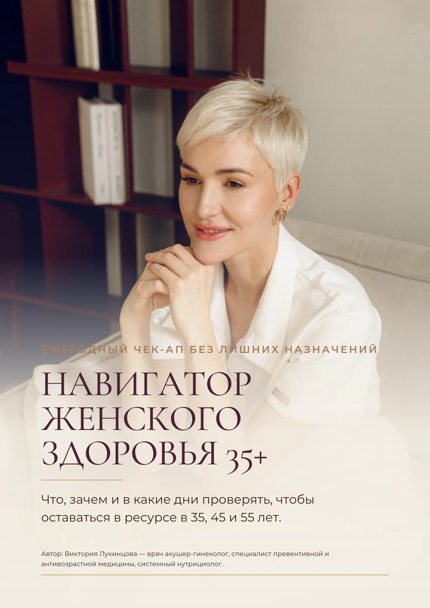
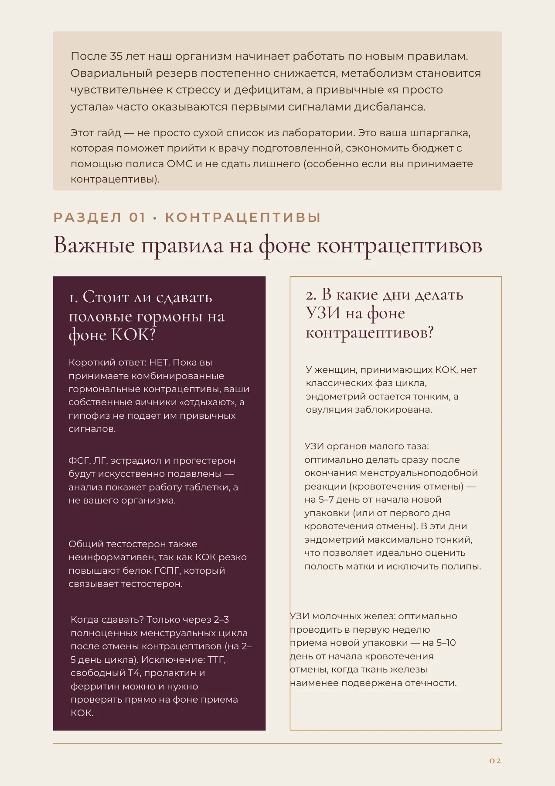
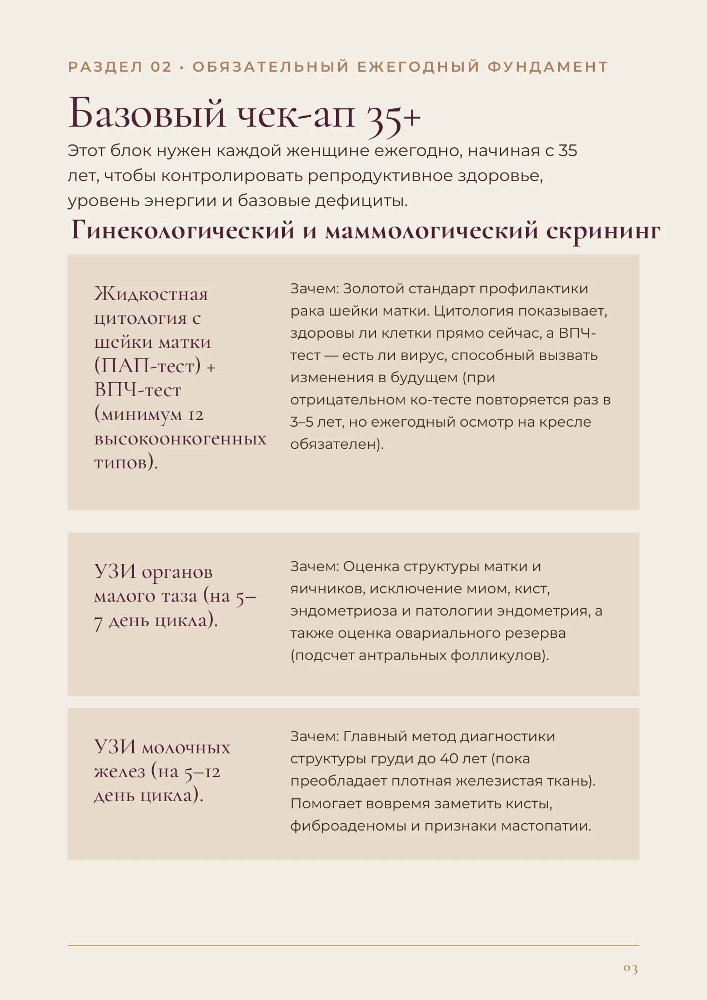
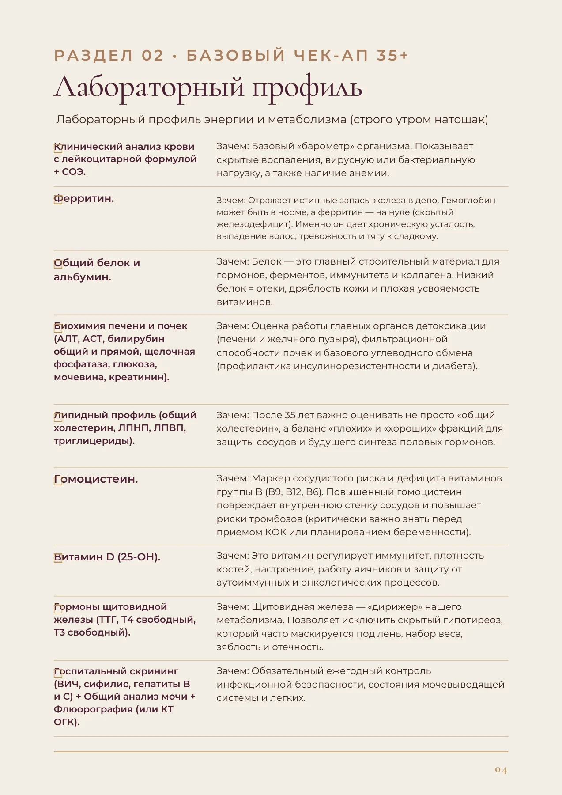
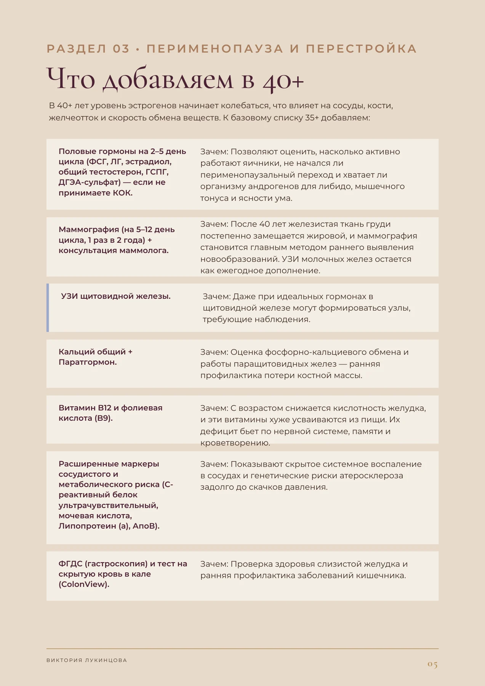
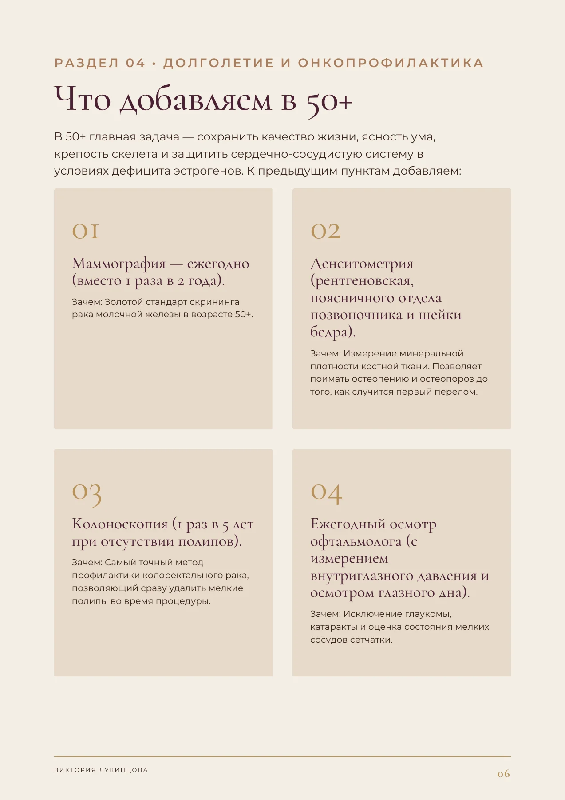
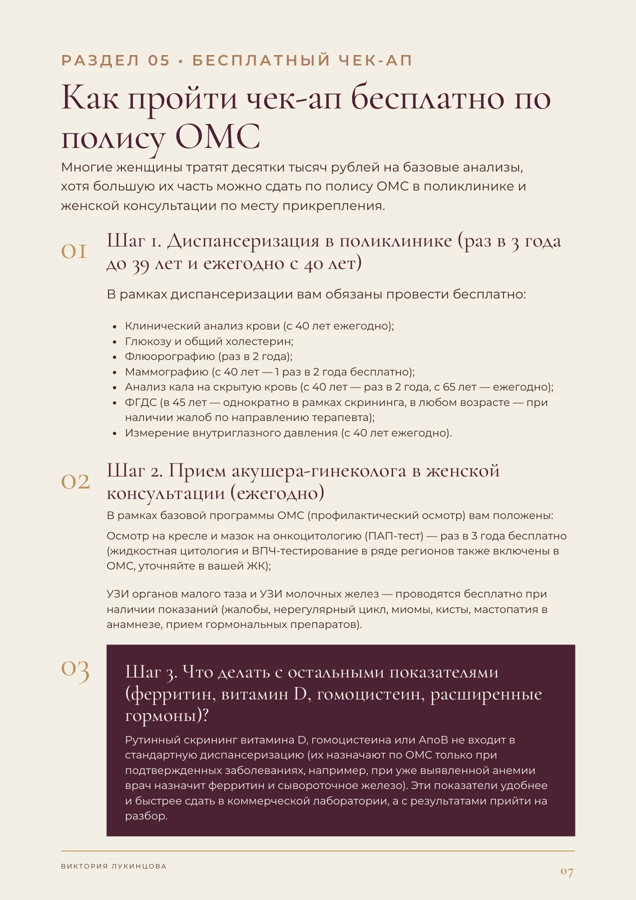
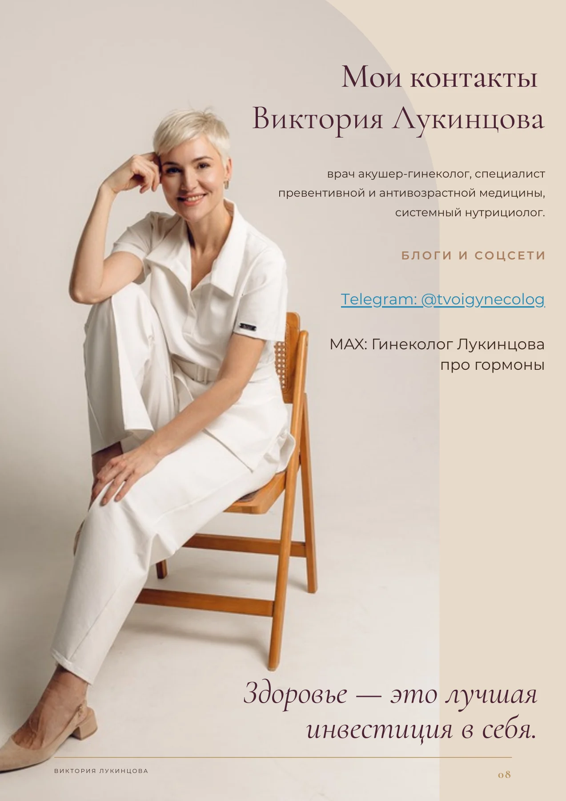
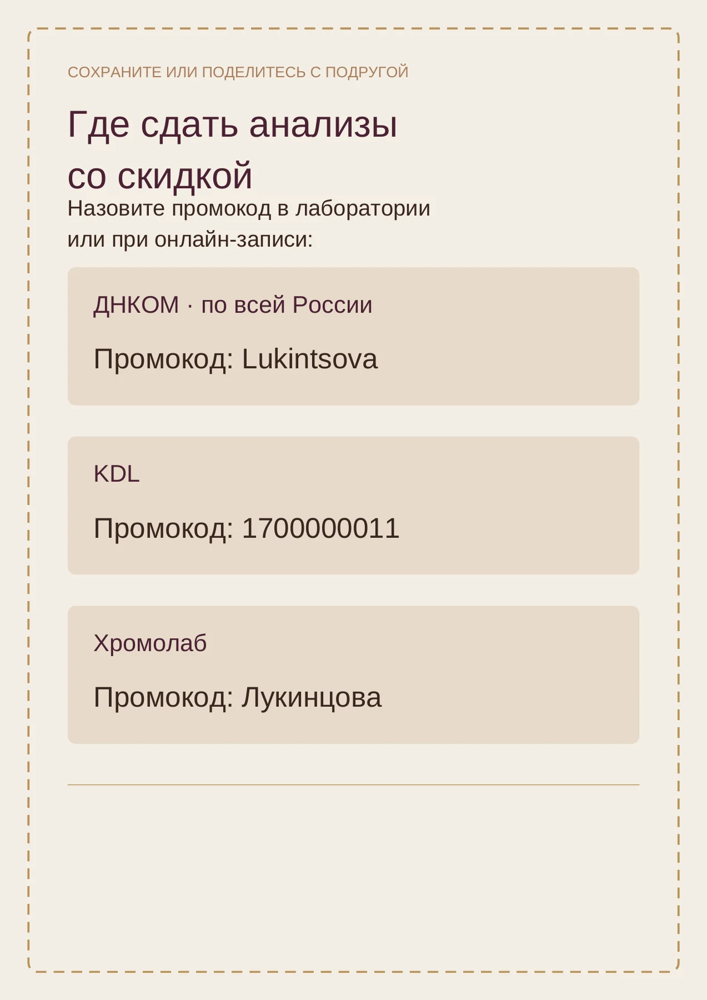

Связаться с Викторией
Ссылки со страницы контактов можно открыть прямо здесь.
Tg: @tvoigynecologMAX
Хотите сохранить гайд?
PDF можно скачать, если удобно хранить его в файлах телефона.
Скачать PDF